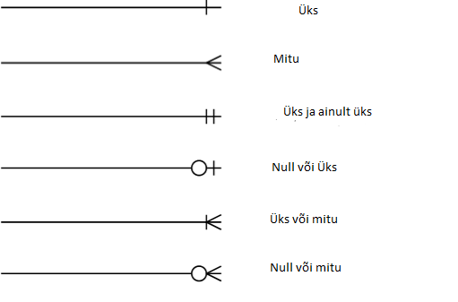

Mis see on?
Entity Relationship (ER) diagramm on teatud vooskeemi tüüp, mis illustreerib, kuidas "olemid" (nt inimesed, objektid või mõisted) on süsteemis üksteisega seotud. ER diagramme kasutame üldjuhul andmebaasi tabelite illustreerimiseks, näidates ära, kuidas tabelid omavahel seotud on. ERD sai alguse tänu Peter Chenile aastal 1976. ERD-des on kolm põhikomponenti: olendid, atribuudid ja suhted. On traditsioon, et ER/andmemudelid ehitatakse kahel või kolmel abstraktsioonitasemel. Allpool olevat kontseptuaalset-loogilist-füüsilist hierarhiat kasutatakse muud tüüpi spetsifikatsioonides ja see erineb tarkvaratehnika kolme skeemi lähenemisviisist:
-

Conceptual data model (Kontseptsiooniline andmemudel) -

Logical data model (Loogiline andmemudel) -

Physical data model (Füüsiline andmemudel)
Entity Relationship Diagrammis kasutatavad sümboli
Järgnevad on ERD-s sagedalt kasutatavad sümbolid, mis näitavad olendite/tabelite seoseid.

Miks me seda kasutame?
ERD-d aitavad kõigil mõista nende andmebaasis talletatavate andmete/teabe aluseid. ERD-sid kasutatakse äriprotsessides kasutatavate relatsiooniandmebaaside kujundamiseks või analüüsimiseks. Sellisest andmebaasist võib kasu saada mis tahes äriprotsess, mis kasutab väljastatud andmeid, mis hõlmavad üksusi, toiminguid ja koosmõju. See võib protsesse sujuvamaks muuta, teavet hõlpsamini leida ja tulemusi parandada. Ilma andmebaasi ülesehitust mõistmata, on tabelite loomine väga piinarikas ja tihtipeale tekivad meil olemiseostega vead või ebavajalikud veerud. Probleemiks tuleb näiteks see, kui teed tabeli õpilaste ja isikute jaoks ja unustad need omavahel seostada või lisad nii õpilase olendile kui ka isikule veeru "IdCode" - mille puhul on risk, et andmed ei klapi või toimub ebavajalik ressursside kasutus.